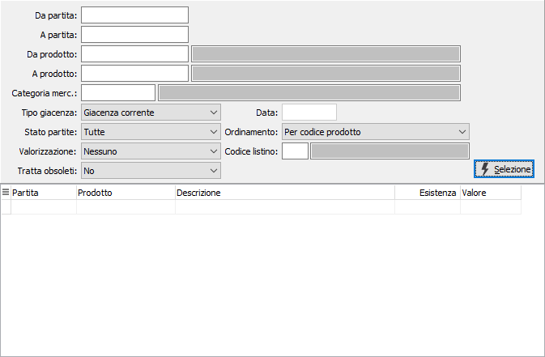
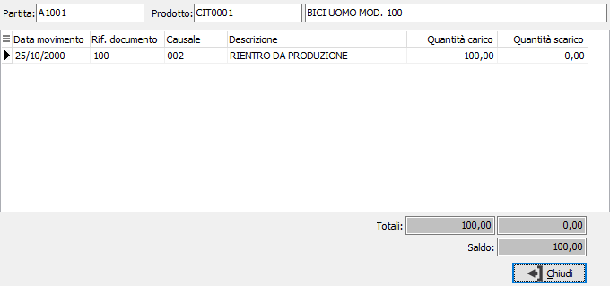

Analisi partite
Il programma effettua la visualizzazione delle giacenze di magazzino per partita in base ai parametri inseriti dall’utente. Una volta visualizzati i risultati, è possibile attivare la stampa utilizzando il bottone Stampa della tool bar.

DA PARTITA: numero della partita con cui si vuole iniziare la selezione.
A PARTITA: numero della partita con cui si vuole terminare la selezione.
DA PRODOTTO: eventuale codice dell'articolo, presente in anagrafica Prodotti, da cui si desidera iniziare la selezione dei movimenti di magazzino. Confermando a vuoto, la selezione inizia con il primo prodotto valido. Sul campo è attiva la ricerca (F9) sull’anagrafica prodotti.
A PRODOTTO: eventuale codice dell'articolo, presente in anagrafica Prodotti, a cui si desidera terminare la selezione dei movimenti di magazzino. Confermando a vuoto, la selezione termina con l’ultimo valido. Sul campo è attiva la ricerca (F9) sull’anagrafica prodotti.
CATEGORIA MERCEOLOGICA: eventuale codice della categoria merceologica a cui si vuole restringere la selezione di analisi. Sul campo è attiva la ricerca (F9) sulla tabella Categorie merceologiche.
TIPO GIACENZA: combo box per definire il tipo di giacenza da elaborare. Valori ammessi: giacenza corrente, giacenza alla data.
DATA: nel caso si sia scelto di elaborare le giacenze alla data, viene attivato questo campo per specificare a quale data elaborare i movimenti per determinare le giacenze.
STATO PARTITE: combo box per definire i criteri di selezione delle partite. Valori ammessi: tutte; solo partite aperte, solo partite chiuse.
ORDINAMENTO: combo box per definire i criteri di ordinamento. Valori ammessi: per articolo; per partita.
VALORIZZAZIONE: definisce il criterio di valorizzazione da utilizzare: nessuno, prezzo medio, costo ultimo carico, costo di mercato, prezzo di vendita, listino.
CODICE LISTINO: codice del listino prezzi da utilizzare per calcolare il valore in caso di valorizzazione per listino. Sul campo sono attive le funzioni di ricerca (F9) sulla tabella listini.
TRATTA OBSOLETI: definisce come se includere nell'analisi anche gli articoli obsoleti: Si, No, Solo obsoleti.
Premendo il pulsante Selezione viene riportato il risultato dell'elaborazione nella griglia sottostante; cliccando sui bottoni anteprima di stampa o stampa della tool bar, si avviano le relative funzioni. Tramite il tasto destro del mouse è possibile esportare la selezione su Excel o copiarla negli appunti e renderla disponibile per incollarla in altre applicazioni.
Facendo doppio clic su una delle righe viene visualizzata la finestra di dettaglio che contiene i movimenti di magazzino relativi al rigo selezionato.
